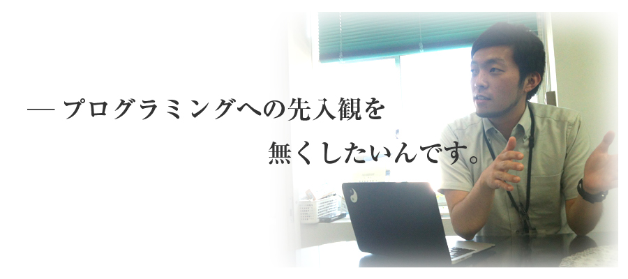
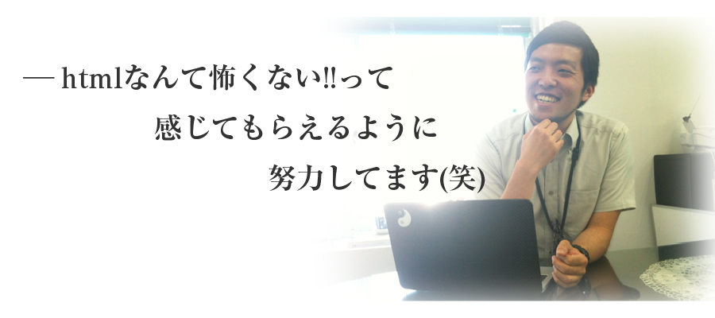
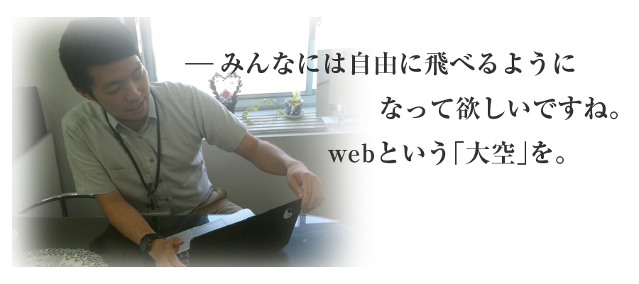
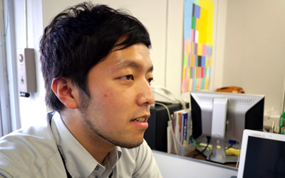
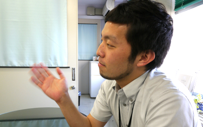

―今回はどのような経緯で「東美テック部」を立ち上げたのですか？
丸山 今のweb業界っていうのは、表面的なデザインだけでなく、仕組みやサービスも一緒に組み上げていく事が大事になってきました。
そのうえで、IllustratorやPhotoshopを使ったデザインの作業ももちろん大事なのですが、それらの「絵」を動かしたりブラウザ上で表示
させる作業も知っておくことが今後は必要になってくると思うんです。
建築でいうと、建築家がどんなにいい建築を設計図の上で考えたとしても、それを実際に組み上げる「大工さん」がいないと実際の建築物にはならない。
webの世界での「大工さん」を育てる事も大事だと考えたのです。
―つまりweb業界の職人を育てたいという事ですか？
丸山 最終的には必ずしもコーダーになる必要はないと思います。もちろんwebディレクターになる人も出てくるだろうし、プロデューサー職につく人もいると思います。
ただ、「プログラミング」を知っているという事はどんな職になるにせよ、重要な事だと思うんです。webのディレクションをしていく上で、コーディングを知らない場合、コーダーの苦労も知らず無茶なデザインを考えてしまうような事になってしまうと思うんです。
やはりディレクターになるのであれば、そういったプログラマーさんやコーダーさんの苦労もわかる人材を育てたいなと思っているんです。
―最終的に東美テック部でどのような事をしたいと考えていますか？
丸山 まずは、テック部というぐらいなのでプログラミングやhtmlコーディングのテクニックを身に付けて欲しいと思っています。やはりまずは「基礎体力」がないとですからね。
ただ、むやみやたらに、「プログラミングを勉強しろ!」「コーディングを勉強しろ!」と言っても楽しくないので、「テクニックを身に付けるとこんな楽しい事が出来るぞ！」っていうのを教えたいですね。

さらには、身に付けた技術を使って「どんな楽しいことが出来るのか？」という事も考えられるようにしたいと考えています。
だって、せっかく技術が身に付いているのに、それを使わないなんてもったいなじゃないですか。
ちょっとしたhtmlを覚えただけでも可能性は十分にあると思いますからね。そういった柔らかい頭を持てるようにしたいと思います。
―なるほど。では最後に一言お願いします。
丸山 とりあえず、まずはhtml、プログラミングは全然怖いものじゃないって事を伝えていきたいと思っています。ちょっと勉強したらすぐに出来るようになりますから。私も完全に独学で勉強しましたからね(笑)。
まずは、怖がらずに積極的に様々なコーディングにチャレンジしていってもらいたいですね。そしてゆくゆくは、webという大空を羽ばたいていってもらいたいです。
―ありがとうございました。
丸山貴明
ー2007年 武蔵野美術大学造形学部空間演出デザイン学科卒業
ー2009年より東洋美術学校の職員として働き始める。
ー2012年 東美 テック部設立
プログラミングとデザインを組み合わせた教育を追求する日々を送る。